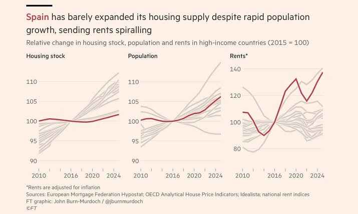
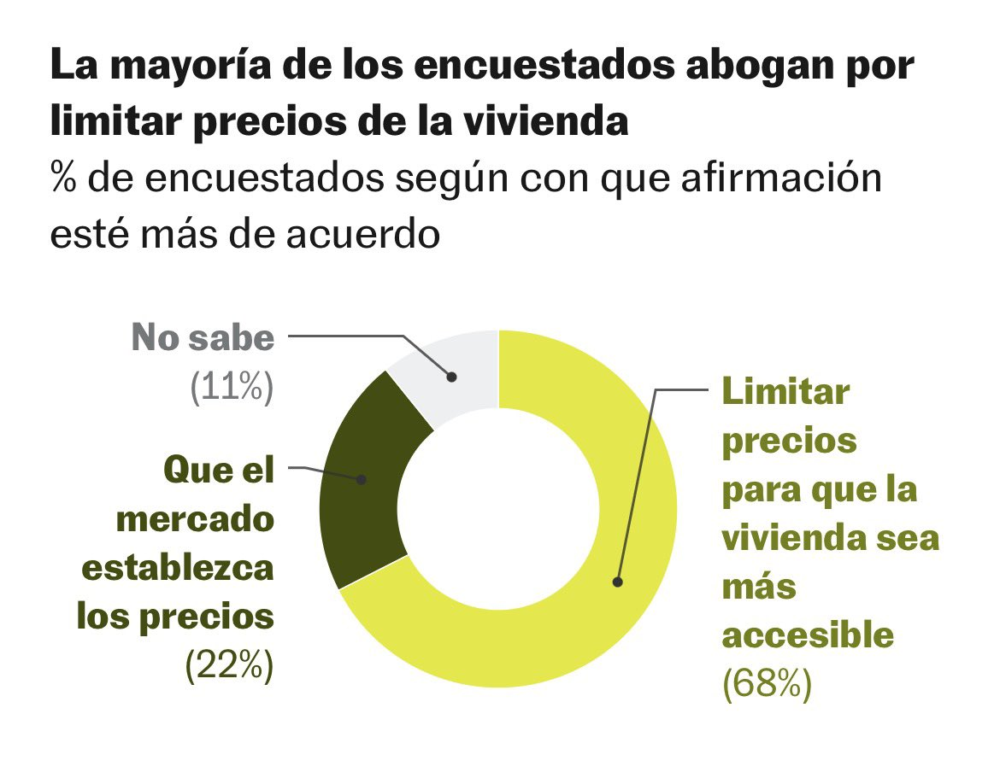

¿Por qué limitar el precio del alquiler no suele ser una buena idea?
4 de octubre de 2026
A la hora de reflexionar sobre la regulación del alquiler, es útil empezar, nunca mejor dicho, por los cimientos. Es decir, comprender qué hay detrás de los precios. Para ello, pensemos en ellos como agregaciones descentralizadas de información. Tomemos el caso de la gasolina. Está cara porque han cerrado el estrecho de Ormuz. Sí, pero también porque no ha habido otros vendedores capaces o dispuestos a compensar esa escasez, y porque, pese a la subida de los precios, nos resistimos a sustituir el coche por otras formas de transporte. Lo mágico es que en este proceso nadie ha tenido que sentar a las partes a una mesa para llegar a ese resultado. Lejos de ello, ajuste a ajuste, el precio ha acabado encontrando su sitio sin que compradores y vendedores lleguen siquiera a conocerse.
En ese proceso de tâtonnement hay dos fuerzas que van modelando, cincelando los precios, como el agua sobre la roca. Son, sí, repitámoslo una vez más, la oferta y la demanda. Y el precio no es más que el punto en el que ambas se cruzan. Si sube, es porque ha subido la demanda, porque ha bajado la oferta o porque han ocurrido ambas cosas a la vez. Qué fuerza o fuerzas están empujando los precios suele ser complicado saberlo, pero no por ello es menos crucial averiguarlo. Si vamos al médico con dolor de barriga y lo que tenemos es una apendicitis, es importante que nos diagnostiquen apendicitis y no gastroenteritis, porque el tratamiento será muy distinto. Del mismo modo, en economía hay que diagnosticar bien qué hay detrás del cambio de un precio, porque de ello dependerán las soluciones.
Dicho todo esto, creo que ya es momento de esbozar por qué los economistas desconfiamos de intervenir los precios, ya sea fijando suelos, como el salario mínimo, o techos, como los topes al alquiler. La razón es sencilla: manipular un precio es matar al mensajero, es decir, ignorar deliberadamente la información que nos está dando. Siguiendo con la analogía médica, es como si ante nuestro dolor de barriga nos recetasen un chute de morfina. En el momento nos aliviará, pero no por ello la apendicitis desaparecerá de nuestro organismo. Y lo que es peor, sin el dolor perdemos la señal que nos avisaba de que algo iba mal.
En el caso del alquiler en España, por mucho que nos empeñemos en buscarle tres patas al gato, los precios revelan una información inequívoca, reflejada recientemente por John Burn-Murdoch en el gráfico del Financial Times que adjunto más abajo. Comparados con los países de nuestro entorno, construimos muy poca vivienda y nuestra población crece con fuerza. En otras palabras, poca oferta y mucha demanda, lo que lleva a un precio estructuralmente más alto. No digamos ya si lo comparamos con los salarios. La tormenta perfecta.

Pese a la tozudez de los datos, el debate político ha ido por otros derroteros, como el de poner techo al precio del alquiler. Según una encuesta reciente de 40dB para El País, el 68% de los encuestados, con mayoría entre los votantes de todos los partidos, prefiere limitar los precios para que la vivienda sea más accesible.

Y en esto Cataluña fue pionera. En septiembre de 2020, el Parlament aprobó la Ley 11/2020, que impuso un control del alquiler en 60 municipios "tensionados", entre ellos Barcelona y buena parte de su área metropolitana. Por eso, para entender por qué controlar el precio del alquiler no suele ser buena idea, el caso catalán, por su cercanía, puede resultar ilustrativo.
La ley asignó a cada vivienda un precio de referencia y prohibió cobrar por encima de él. Además, la renta de un contrato nuevo no podía superar la del anterior, aunque cambiara el inquilino. Lo curioso es que su propio preámbulo reconocía que el problema era "un aumento sustancial de la demanda de vivienda de alquiler" y que su solución pasaba por "incrementar el parque de vivienda pública y social", algo que exigía "un esfuerzo largo y sostenido". Es decir, el legislador fue consciente en todo momento de la raíz del problema y de la insuficiencia de la medida. ¿Cómo es posible, entonces, que sea tan popular? Probablemente porque en el debate público figuran otros sospechosos habituales, llamémoslos especulación, "fondos buitre" y turismo.
¿Cuál era el problema en Barcelona, su diagnóstico? ¿Un problema de viviendas vacías en manos de especuladores? ¿Un problema de concentración de mercado, donde unos pocos tienen tanta vivienda que son capaces de manipular los precios? Los datos no apuntan en ninguna de las dos direcciones. Según el Banco de España, las viviendas desocupadas en Barcelona rondaban el 9% del parque en 2020, y no todas son pisos que puedan salir al mercado mañana, porque muchas están entre un inquilino y el siguiente, en obras o a la venta. Tampoco hay rastro de un oligopolio. Un tercio de los pisos alquilados en la ciudad pertenece a unipropietarios, y más de la mitad a propietarios con cinco viviendas o menos. Quienes tienen más de 300 viviendas suman apenas un 7%, y son sobre todo el sector público y entidades sin ánimo de lucro. Se trata, por tanto, de un mercado lo suficientemente atomizado para que nadie tenga el tamaño necesario para mover el precio. ¿Y el turismo? Según Inside Airbnb, en Barcelona hay unos 7.000 pisos enteros anunciados para estancias cortas, el equivalente a un 3,4% de las viviendas que se alquilan como residencia habitual. Aunque todos volvieran mañana al alquiler residencial, darían techo a unas 17.000 personas, una cifra que palidece cuando se compara con los más de 120.000 nuevos vecinos que ha sumado la ciudad desde 2016. De nuevo, el cuadro es muy parecido al del conjunto de España, y es que en la última década la población de Barcelona ha crecido casi un 8%, mientras que el número de viviendas apenas lo ha hecho un 3%.
Con este diagnóstico en mente, poner un techo al precio era tratar el síntoma y no la enfermedad. Hay, sin embargo, quien defiende los controles por otro motivo. Aunque no resuelvan la escasez, al menos trasladarían dinero de los propietarios, que en promedio tienen más renta, a los inquilinos. En este sentido, antes de preguntarnos si la medida cumplió su objetivo, conviene plantearse si podía alcanzarse de una forma menos costosa, lo que en economía conocemos como coste de oportunidad. La respuesta es que para redistribuir hay herramientas pensadas precisamente para ello, y más eficientes, como por ejemplo los impuestos. Dicho esto, ¿logró al menos la política esa redistribución esperada de riqueza? Para responder, me apoyaré en el estudio más detallado que hay hasta la fecha, el de Joan Monràs y José García-Montalvo. Sus resultados, dicho sea de paso, van muy en línea con lo que ha encontrado la literatura en otros contextos.
La primera conclusión del estudio es, digámoslo así, mecánica. Y es que la ley consiguió que los alquileres bajasen en los municipios regulados en torno a un 5%. Sin embargo, dicho promedio esconde una historia más incómoda. Por un lado, los propietarios de pisos por encima del precio de referencia decidieron retirarlos del mercado del alquiler, haciendo que la oferta cayese en torno a un 10%. Por otro, las fuerzas de la oferta y la demanda se abrieron paso por una vía alternativa, y quienes buscaban un piso caro y ya no lo encontraban acabaron compitiendo por los más baratos, empujando así al alza los precios de los que antes de la ley estaban por debajo del precio de referencia. Como resultado, los pisos caros se abarataron hasta un 10% respecto a los municipios sin regulación, mientras que los baratos pasaron a encarecerse.
Esto dio lugar a un reparto de ganancias y pérdidas muy distinto del que el legislador esperaba en un primer momento. Los inquilinos que antes pagaban más pasaron a pagar menos gracias a la ley, mientras que los inquilinos de los pisos más baratos, presumiblemente las personas con menos renta, pasaron a pagar más.
No es cuestión de prodigarse, pero ojalá el lector se quede con tres lecciones que se pueden dar desde la economía y que funcionan para la práctica totalidad de contextos que se nos puedan venir a la mente.
La primera es que los precios son información. Un alquiler alto no tiene por qué ser un capricho del casero, sino el resultado de una oferta relativamente escasa. Taparlo con un tope no solo no hará desaparecer la escasez, sino que postergará la llegada de una solución. ¡No matemos al mensajero!
La segunda tiene que ver con la evaluación de políticas públicas. La piedra angular de toda evaluación debería consistir en preguntarse por el coste de oportunidad. No basta con que una medida pueda lograr un objetivo, sino que hay que ver si existe otra que consiga lo mismo con menos coste. Eso por un lado. Por el otro, las políticas han de ser juzgadas por sus resultados y no por sus intenciones. A este respecto, la ley catalana acabó perjudicando precisamente a quienes decía querer proteger. Dejemos de ser tan naíf, entendamos bien los incentivos que nos rodean, prescindamos de la buena voluntad a la hora de formular cualquier política y preparémonos para gobernar, por decirlo con Kant, hasta un pueblo de demonios.
Por último, pero no menos importante, jamás perdamos de vista que la economía es un puzle, y que cuando movemos una ficha, no hemos de fijarnos en el cambio inmediato, lo que se conoce como equilibrio parcial, sino en los efectos de segunda ronda, esto es, el equilibrio general o cómo acaba quedándose el puzle. Cuando bajas por ley un precio, este baja, como es obvio. Pero también debería resultar obvio, o al menos previsible, que el resto de agentes en la economía, en este caso los propietarios, alteran su comportamiento en respuesta a la bajada de precio, por ejemplo retirando o vendiendo pisos. Juzgar una política solo por su primer efecto es arriesgarse a recetar morfina a una apendicitis, dejar que degenere en peritonitis y, sí, acabar matando al paciente.
Está en nuestras manos dejar de hacer trampas al solitario y responsabilizarnos de nuestros propios deseos.